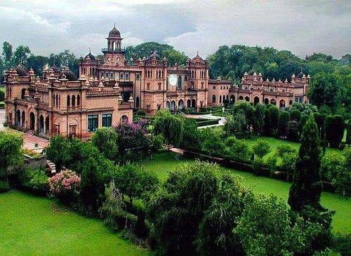

The city of Pakistan :
Peshawar is the capital city of Khyber Pakhtunkhwa, Pakistan. The largest city in Khyber Pakhtunkhwa and the sixth-largest city in Pakistan, Peshawar is primarily populated by Pashtuns, who comprise the second-largest ethnic group in the country

The university was founded in 1950 and offers programs for undergraduate, post-graduate, and doctoral studies. With approximately 14,000 enrolled students attending the university, it has six academic faculties with forty postgraduate department as well as two centers of excellence The university is known for its research in social, medical, and natural sciences. Spread over an area of 1,045 acres (4 km2) as a residential campus, the university is the first public university to be established in Khyber-Pakhtunkhwa.
The planned capital area of 350 square miles (906 square km) is an expanse of natural terraces and meadows surrounding the city. A further 1,400 square miles (3,626 square km) of hinterland, known as the Specified Areas, is subject to planning control, with the Margala Hills, 3,000 to 5,000 feet (900 to 1,500 metres) high, in the north and northeast. The southern portion is an undulating plain. It is drained by the Kurang River, on which the Rawal Dam forms a lake holding about 50,000 acre-feet (61,650,000 cubic metres) of water. Pop. (2017) city, 1,009,832; capital area, 2,001,579.
The old clock sits in the thick of the chaos in Peshawar’s Old City- you can’t miss it as it lies only 200 m from the iconic Chowk Yadgar. Due to a complete lack of parking in or around Ghanta Ghar, hailing a rickshaw is the best way to see this famous landmark of Peshawar.
Made with By Mr.Haris
Leave a Comment